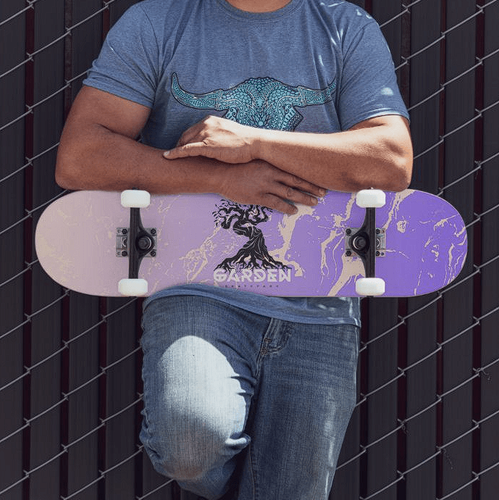

A stunning venue — a website that didn't show it
Your digital presence should match the energy and professionalism of your physical space. The Garden — Rochester's newest luxury indoor skatepark — had built something genuinely impressive. But the website that was supposed to represent it was working against them.
The original site was built on Wix but overloaded with scattered content, broken mobile layouts, and disorganized navigation. Visitors struggled to find basic information. The site felt more DIY than premium — a real mismatch for a modern, high-end skatepark that had invested seriously in the physical experience.
In a market like Rochester where word of mouth and search visibility both matter, a weak website costs real customers. If someone searches "indoor skatepark Rochester MN" on their phone and lands on a broken mobile layout, they're gone before they've seen what the space actually looks like.
Back to basics — clarity and performance first
I went back to the basics, keeping clarity and performance front and center. The goal wasn't to add things — it was to strip away everything that was creating noise and rebuild around what actually mattered: getting a visitor from landing to booking as frictionlessly as possible.
The client reaction says it all
"Thank you so much Jeremy. We love our new website! Way easier to use and so much more professional! THANK YOU SOO MUCH!!!"
— Laura Kramer, The Garden Indoor SkateparkThe redesigned site reflects the quality of the physical space — clean, modern, and easy to navigate. It's mobile-first because that's where the traffic actually comes from. And the SEO foundation means The Garden shows up when people in Rochester are looking for exactly what they offer.
Extending the brand: Custom Merchandise
A brand shouldn't stop at the digital border. As part of the strategy for The Garden, I explored how their new visual identity could translate into physical products that members would actually want to own. This included concepts for custom skateboard decks and apparel that align with the premium, community-focused energy of the park.

For Rochester MN businesses with a website that doesn't match the quality of what they actually do — this is the kind of project I take on. Not a template swap. A real redesign that starts with understanding your brand and your customers.